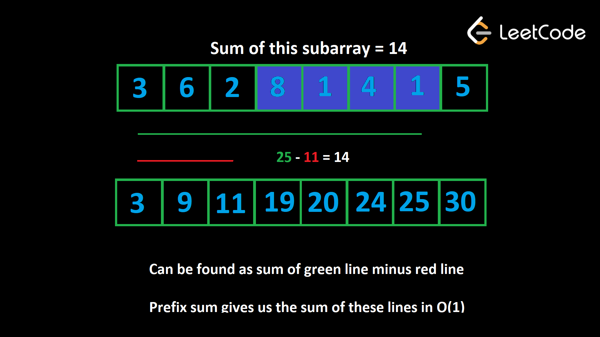

Префиксная сумма — это метод, который можно использовать с массивами (числами). Идея состоит в том, чтобы создать prefix массив, где prefix[i] — это сумма всех элементов до индекса i (включительно). Например, если nums = [5, 2, 1, 6, 3, 8], у нас будет prefix = [5, 7, 8, 14, 17, 25].
Когда подмассив начинается с индекса 0, он считается «префиксом» массива. Prefix sum представляет собой сумму всех префиксов.
Префиксные суммы позволяют найти сумму любого подмассива в О(1). Если нам нужна сумма подмассива от i до j (включительно), то ответ будет prefix[j] — prefix[i — 1] или prefix[j] — prefix[i] + nums[i], если вы не хотите иметь дело со случаем выхода за пределы, когда i = 0.
Это работает, потому что prefix[i - 1] — это сумма всех элементов до индекса i. Когда вы вычитаете это из суммы всех элементов до индекса j, у вас остается сумма всех элементов, начиная с индекса i и заканчивая индексом j, а это именно то, что мы ищем.

На изображении выше мы хотим найти сумму подмассива, выделенного синим цветом.
Если вы возьмете все элементы до конца подмассива (зеленая линия) и вычтете все элементы до него (красная
линия), у вас получится подмассив.
Используя префиксную сумму, мы можем найти сумму зеленой линии 25 и красной линии 11 за постоянное время и
взять их разницу, чтобы найти сумму подмассива, равную 14.
Построить префиксную сумму очень просто. Вот некоторый псевдокод:
prefix.append(nums[i] + prefix[prefix.length - 1])
Изначально мы начинаем только с первого элемента. Затем мы выполняем итерацию с i, начиная с индекса 1. В любой заданной точке последний элемент prefix будет представлять собой сумму всех элементов входных данных до индекса i, но не включая его. Таким образом, мы можем добавить это значение плюс текущее значение в конец prefix и перейти к следующему элементу.
Префиксная сумма — отличный инструмент, когда проблема связана с суммами подмассива. Это стоит всего O(n) для построения, но позволяет выполнять все будущие запросы к подмассиву. O(1), поэтому обычно это может улучшить временную сложность алгоритма в раз. O(n), где n — длина массива. Давайте посмотрим на несколько примеров.
Построение суммы префикса является формой предварительной обработки. Предварительная обработка — это полезная стратегия в различных задачах, когда мы сохраняем предварительно вычисленные данные в структуре данных перед запуском основной логики нашего алгоритма. Хотя предварительная обработка занимает некоторое время, это вложение, которое сэкономит нам огромное количество времени на основных частях алгоритма.
Пример 1. Учитывая целочисленный массив nums, массив queries, где queries[i]
= [x, y] и целочисленный
limit, возвращают логический массив, который представляет ответ на каждый запрос. Запрос
является true,
если сумма подмассива от x до y меньше limit, или false
в противном случае.
Например, если задан nums = [1, 6, 3, 2, 7, 2], queries = [[0, 3], [2, 5], [2, 4]]
и limit = 13, ответ
будет таким: [true, false, true]. Для каждого запроса суммы подмассивов равны [12, 14,
12].
давайте построим сумму префиксов, а затем воспользуемся описанным выше методом для ответа на каждый запрос в О(1).
prefix = [nums[0]]
for i in range(1, len(nums)):
prefix.append(nums[i] + prefix[-1])
ans = []
for x, y in queries:
curr = prefix[y] - prefix[x] + nums[x]
ans.append(curr < limit)
return ans
Без суммы префикса ответ на каждый запрос был бы O(n) в худшем случае, где n — длина nums. Если m = query.length, это даст временную сложность О(n∗m). С префиксной суммой это стоит O(n) для построения, но затем ответ на каждый запрос О(1). Это дает гораздо лучшую временную сложность О(n+m). Мы используем O(n) пространство для построения суммы префикса.
Example 2: 2270. Number of Ways to
Split Array
Учитывая целочисленный массив nums, найдите количество способов разделить массив на две части
так, чтобы
сумма первой части была больше или равна сумме второй части. Во втором разделе должен быть хотя бы один
номер.
Подход грубой силы мог бы заключаться в переборе каждого индекса i от 0 до nums.length - 1. Для каждого индекса выполните итерацию от 0 до i, чтобы найти сумму левого раздела, а затем повторите от i + 1 до конца массив, чтобы найти сумму правильного раздела. Этот алгоритм будет иметь временную сложность O(n2).
Если мы сначала построим сумму префикса, а затем пройдемся по каждому индексу, мы сможем вычислить суммы левого и правого разделов в O(1), что улучшит временную сложность О(n).
Когда мы разделяем массив на две части, у нас остаются два смежных подмассива. Нам нужно найти суммы этих подмассивов и сравнить их.
Есть n−1 способов разбить массив (правая часть не может быть пустой). Для каждого из этих разделений это будет стоить O(n) для перебора двух подмассивов и нахождения их сумм.
Вместо этого мы можем потратить O(n) один раз, чтобы построить префиксную сумму перед попыткой разделения. Затем мы можем использовать префиксную сумму для выполнения каждого из n−1 разделений на O(1) время. Как мы знаем, с помощью префиксной суммы мы можем вычислить сумму любого подмассива в О(1).
Допустим, мы разделяемся по индексу i. Левый раздел содержит все элементы массива до индекса i, поэтому он имеет сумму prefix[i]. Правый раздел начинается с индекса i + 1 и заканчивается конечным индексом n - 1. Это означает, что он имеет сумму prefix[n - 1] - prefix[i].
n = len(nums)
prefix = [nums[0]]
for i in range(1, n):
prefix.append(nums[i] + prefix[-1])
ans = 0
for i in range(n - 1):
left_section = prefix[i]
right_section = prefix[-1] - prefix[i]
if left_section >= right_section:
ans += 1
return ans
В этой задаче порядок доступа к prefix является инкрементным: чтобы найти leftSection, мы выполняем prefix[i], поскольку i увеличивается на 1 на каждой итерации.
Таким образом, для вычисления leftSection нам фактически не нужен массив. Мы можем просто инициализировать leftSection = 0, а затем вычислять его на лету, добавляя к нему текущий элемент на каждой итерации.
А как насчет rightSection? По определению правый раздел содержит все числа массива, которых нет в левом разделе. Следовательно, мы можем предварительно вычислить сумму всех входных данных как общую, а затем вычислить rightSection как общую сумму — leftSection.
Мы по-прежнему используем концепцию суммы префикса, поскольку каждое значение leftSection представляет собой сумму префикса. Мы просто воспроизвели функциональность, используя целое число вместо массива.
ans = left_section = 0
total = sum(nums)
for i in range(len(nums) - 1):
left_section += nums[i]
right_section = total - left_section
if left_section >= right_section:
ans += 1
return ans
Мы улучшили сложность пространства до O(1), что является большим улучшением.
Это последний основной шаблон, который мы будем рассматривать для массивов и строк. В следующей статье мы рассмотрим еще несколько распространенных приемов и закономерностей, а затем завершим главу тестом, прежде чем двигаться дальше. Перед этим попробуйте применить изученные здесь понятия в следующей задаче.